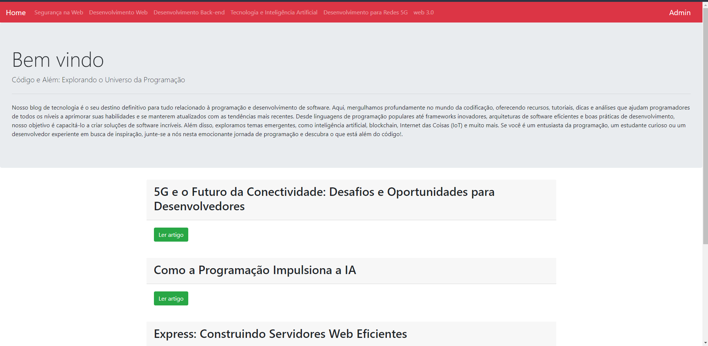
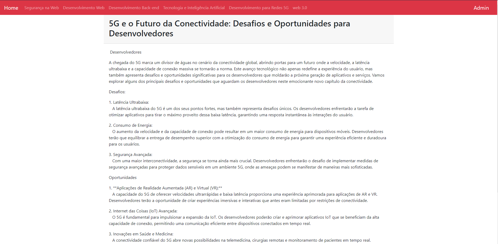
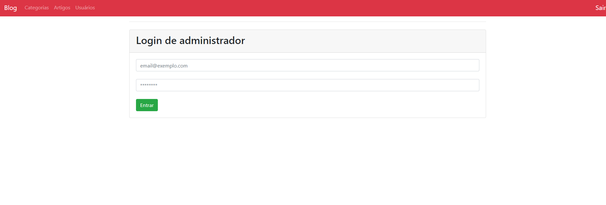
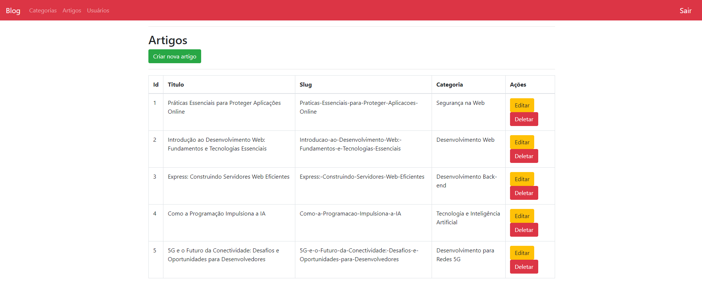
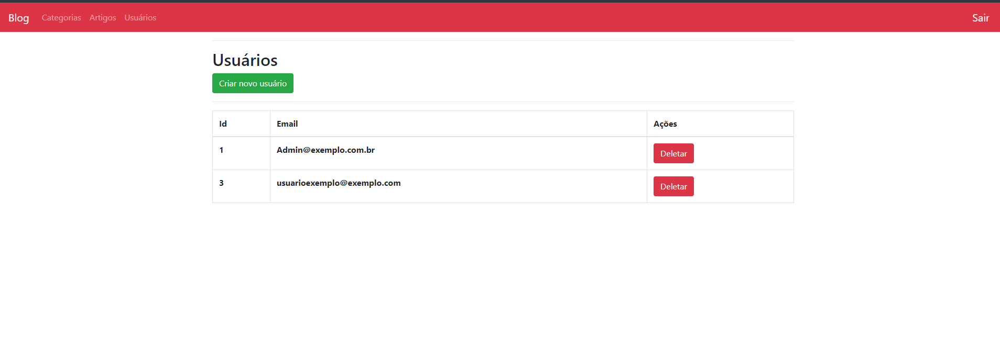
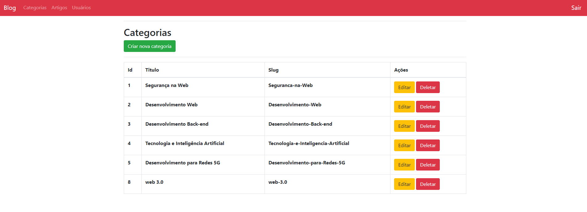
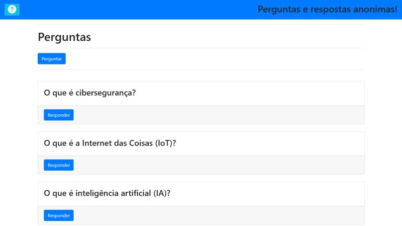
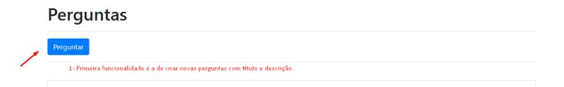
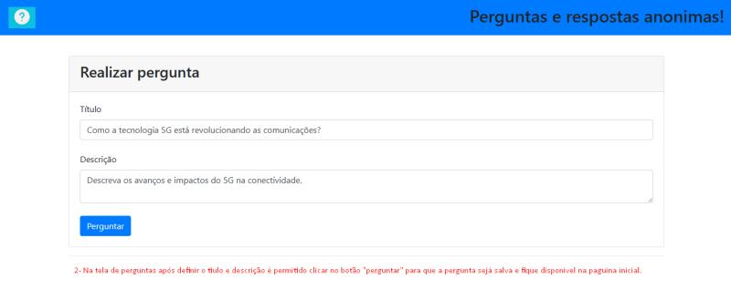

Desenvolvedor de Software
GitHub: Felipe-Visoski
Email: felipe.visoski@unochapeco.edu.br
Whatsapp:(049)98865-0759
Olá, eu sou Felipe Visoski dos Santos, um profissional apaixonado por tecnologia da informação e entusiasta do mundo digital. Desde 2020, venho trilhando uma jornada na área de TI, desbravando diversos desafios e acumulando experiências enriquecedoras.
Iniciei minha carreira como Assistente de Infraestrutura, onde fui responsável por gerenciar e manter toda a estrutura de TI de uma empresa com mais de 400 funcionários. Com dedicação e comprometimento, avancei para o cargo de Analista de Infraestrutura, prestando suporte direto aos clientes internos e garantindo o pleno funcionamento dos sistemas.
Minha trajetória também inclui uma passagem como Analista de Suporte em uma empresa com mais de 1000 clientes, onde desenvolvi habilidades essenciais no atendimento ao cliente e na resolução eficiente de problemas, destacando-me pelo compromisso com a excelência no suporte helpdesk.
Além disso, tive a experiência enriquecedora de ser proprietário de uma empresa/loja de eletrônicos, o que ampliou minha visão empreendedora e consolidou minha compreensão abrangente do universo tecnológico.
Atualmente, estou imerso no aprendizado contínuo, cursando a faculdade de Sistemas de Informação em busca de aprimorar ainda mais meus conhecimentos e habilidades. Como parte dessa evolução, mergulhei no universo do desenvolvimento web, realizando projetos inovadores.
Meus projetos recentes envolvem a utilização das tecnologias mais modernas, como HTML, CSS, JavaScript, Nodejs, Expressjs e Bootstrap. Estou empenhado em me tornar um programador web de destaque, combinando minha bagagem técnica com a paixão por criar soluções impactantes e eficientes. 🌐💻
Blog dinâmico com um eficiente Painel Administrativo! 🌐✨
📌 Principais funcionalidades:
🌐 Navegação Intuitiva: Os usuários podem acessar os artigos mais recentes na página inicial, explorar páginas com conteúdo mais antigo e filtrar artigos por categorias.
📖 Leitura Acessível: Ao clicar nos artigos desejados, os usuários podem mergulhar em conteúdos detalhados e informativos.
🛠️ Controle Total do Administrador: O usuário administrador tem o poder total de gerenciar o blog. Pode adicionar, editar e excluir categorias, criar novos artigos com títulos e categorias personalizadas, além de editar ou excluir artigos existentes.
👥 Gestão de Usuários: O administrador pode facilmente gerenciar o cadastro de usuários.
💻 Tecnologias Utilizadas:
🚀 Git
💽 MySQL
🌐 Node.js
📦 npm (Gerenciador de Pacotes do Node)
💻 JavaScript
📄 HTML
⚡ Express.js
🔍 EJS
🗃️ Sequelize.js
🅱️ Bootstrap
Confira o código-fonte no GitHub: [blog-project]🚧🔍
Para uma experiência completa, assista ao vídeo demonstrativo : Assistir 🎥✨
📸 Uma Visão Visual do Projeto:

📸:

📸:

📸:

📸:

📸:

Um site de perguntas e respostas anônimas 🤖💬
📌 O que o projeto oferece:
🚀 Acesso Rápido: Os usuários podem explorar perguntas existentes diretamente na página inicial, proporcionando uma experiência intuitiva desde o primeiro acesso.
💡 Criação de Perguntas: A plataforma permite que os usuários contribuam com o conteúdo, criando novas perguntas e fornecendo título e descrição para cada uma. 🌟
🔄 Interação Dinâmica: Ao acessar uma pergunta, os usuários têm a liberdade de não apenas responder, mas também visualizar as respostas de outros participantes, criando uma atmosfera de colaboração e aprendizado.
💻 Tecnologias Utilizadas:
🚀 Git
💽 MySQL
🌐 Node.js
📦 npm (Gerenciador de Pacotes do Node)
💻 JavaScript
📄 HTML
⚡ Express.js
🔍 EJS
🗃️ Sequelize.js
🅱️ Bootstrap
🔗 Repositório no GitHub:
Para uma imersão mais profunda no código e na estrutura do projeto, confira o repositório no GitHub. Contribuições, feedback e estrelas são sempre bem-vindos! ⭐
📸 Uma Visão Visual do Projeto:

📸:

📸:

Projeto voltado para otimizar as operações de teste em nosso ambiente de suporte. Este projeto foi desenvolvido com foco na agilidade e eficiência, proporcionando soluções práticas para o time.
📌 Principais Recursos:
1- 🔄 Gerador de CPF, CNPJ e Placas: Implementação de uma ferramenta para geração rápida e confiável de números de CPF e CNPJ para cenários de teste.
2- 🚗 Conversor de Placas: Desenvolvimento de um mecanismo eficiente para a conversão entre formatos de placas de veículos, contemplando tanto o padrão antigo quanto o Mercosul.
Tecnologias Utilizadas:
🖌️ HTML, CSS: Estruturação e estilização da interface para uma experiência de usuário fluida.
🚀 JavaScript: Implementação de lógica dinâmica para interatividade e resposta em tempo real.
🅱️ Bootstrap: Utilização de componentes para acelerar o desenvolvimento e garantir responsividade.
Benefícios para a Operação:
⏰ Otimização do Tempo: Redução significativa no esforço manual associado à geração de dados de teste.
🚀 Eficiência no Processo de Validação: Facilidade na conversão de placas, contribuindo para uma verificação mais ágil e precisa dos sistemas.
🔗 Link para o Projeto no GitHub : GIT
🔗 Acesse o site aqui!:Site
Este projeto reflete nosso compromisso com a qualidade e eficiência em nossas operações de suporte. Fico à disposição para discussões técnicas, feedback ou contribuições adicionais. Juntos, continuaremos a elevar nossos padrões operacionais.
🌟 #DesenvolvimentoWeb #Tecnologia #EficiênciaOperacional #InovaçãoTécnica